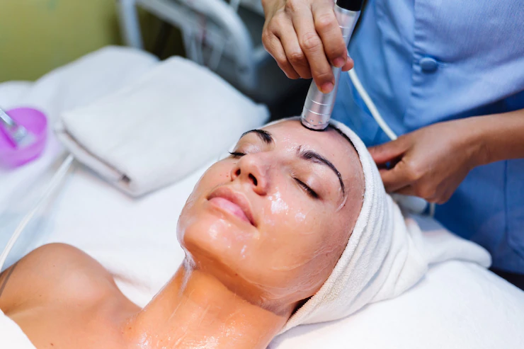

This treatment includes Double Cleansing with Warm Mitts, Exfoliation, LED Light Treatment, Steam and Extraction if needed, Sculpt + Lifting Facial Massage, and a Collagen Mask.
Benefits : Instant smooth glowing radiant skin.

Medi-facials are devised in a way to perforate the skin’s layers and have a superior and long-lived effect than normal salon facials. Medi-facials (also referred to as chemical peels) are skin treatments that are formulated to perk up the overall health of your skin. Using scientific techniques and treatments, it works towards refreshing, rekindling and rejuvenating your skin. The difference between a Medi-facial and a regular spa facial is that a spa facial is aimed at calming and comforting the skin and is principally created to be pampering and relaxing. Whereas, on contrary, Medi-facial mainly endeavoured to achieve the fixation of deeper skin conditions and concerns that need a clinical approach.
This process includes injecting vitamins into the dermal layer using a microneedle. It helps with facial rejuvenation and the brightening of the dermal layer.
It uses a high-tech machine to exfoliate the skin. The tool uses diamond tips or crystals to remove the superficial layer or the dead skin layer on the face.
This process creates electromagnetic fields using a machine. It helps the serum penetrate deeper into the dermal layers and offers better results.
If your skin goals include hydration, cleansing, extraction of blackheads and whiteheads and exfoliation, this facial is a perfect choice for you. Using a plastic blade, the doctor introduces necessary products into the skin, making it an ideal choice for women with oily faces, acne-prone skin or experiencing blackheads frequently.
sing a high-pressure technique to create an oxygen bubble, the doctor injects the serum into various layers of the skin. It ensures that the product reaches the target area and can offer the best results.
Women who experience premature or early signs of ageing can go for this treatment. This medi-facial technique uses blue and red LED therapy to amplify the benefits of the procedure. It is good for acne-prone skin as well, and it works as an anti-ageing treatment.
Have you seen a dermapen or derma roller? The process of micro-needling uses a similar device to apply platelet-rich plasma or serum to the face. It is ideal for facial rejuvenation and provides nourishment to dermal layers.
This process uses alpha-hydroxy acids, mild peeling agents. It brightens the dermal layer, and hence, is a perfect choice for women who aim to achieve a flawless and glowing skin.
Q-switched laser technique, as the name suggests, uses the laser to apply and inject the necessary ingredients. It provides photofacial that brightens the face and helps you achieve a natural glow.
The benefits of a medi-facial are aplenty. Usually, spa facials do not penetrate the skin deeply for an effective result. They are superficial. In medi-facials, devices like ultrasonics and mesoporation can be used in combination with intraceuticals like vitamins, serums, chemical peels, and plant extracts to give promising and long-lasting results.
Within 48-72 hours, you can get healthy and hydrated skin. Within 28 to 48 days you can get long-term benefits due to cell regeneration. Other benefits of a medi-facial are:
Usually results last 3–4 weeks depending on skin type.
Yes, it improves skin health and addresses deeper concerns.
Yes, with regular sessions results are clearly visible.